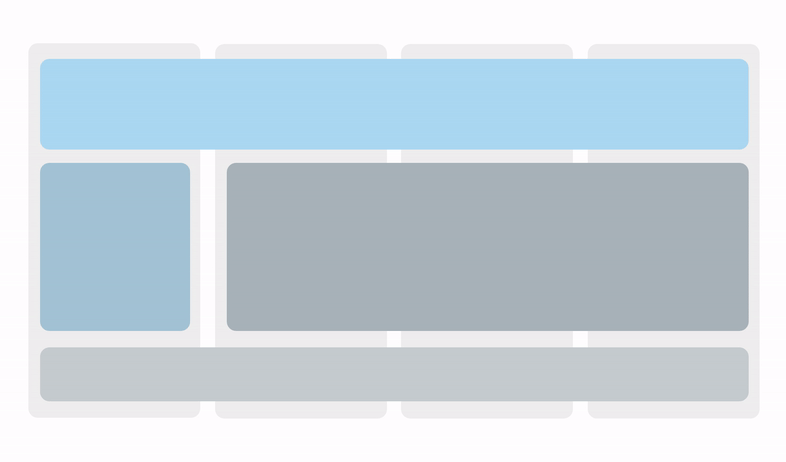
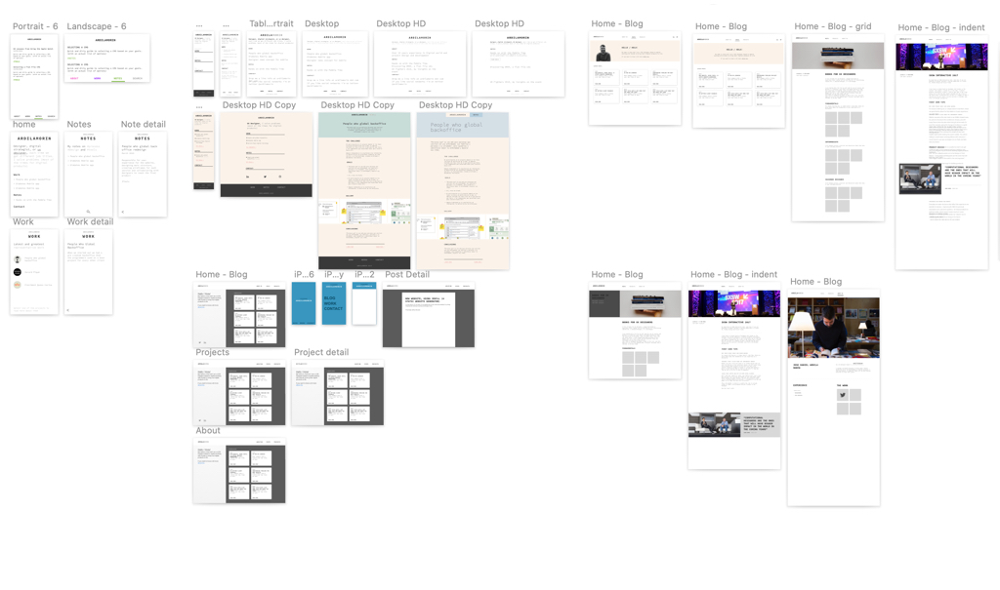
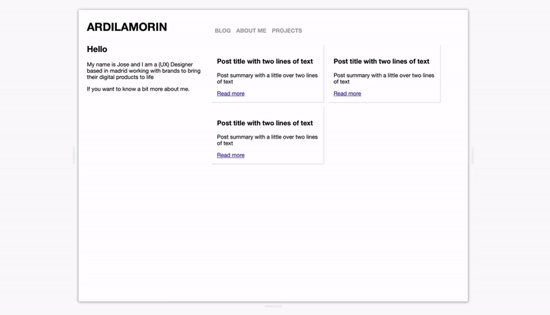

I finally redesigned this website. The challenge was to do a fully responsive site without media queries using Flexbox and CSS Grid.

Responsive design without media queriesFor the last decade, working on websites for companies, you would always hear the question: “how many break points are we designing for?” or “are we delivering desktop and mobile…what about tablet?” So, you would create different designs for each of the agreed upon “breakpoints”, which were then translated to specific CSS styles for each device resolution using media queries, and sometimes problems would emerge. A new device would come out, a smaller iPad, a bigger phone, that would break the design and would add a new breakpoint to the requirements. The device where user’s were supposed to view the website determined how we designed it, and for me, it felt wrong, inefficient and not built to last.
There are other techniques to design responsive websites that embrace flexibility, making the content accessible regardless of the browser, platform or screen that the person chooses to access your page. The concept is not new, and John Allsopp has been advocating for it since the year 2000 when he wrote the article The DAO of the web.
But It wasn’t until last year, when I read and article from Juan Martin García titled Look Ma, no media Queries! Responsive Layouts Using CSS Grid that I decided to give it a try, explore what could be done with the new CSS capabilities like CSS Grid and Flexbox, that promised to accomplish better results with less development effort, and in the case of Juan’s article, no media-queries.
Creating a full site without media queries was more a personal challenge than a technical one
Creating a full site without media queries was more a personal challenge than a technical one. I knew could be done, but could I do it? Answering that question involved overcoming certain challenges:
-
Making time for it, when there are tools coming out every month that promise of getting a “premium look on your website without struggling to create it.” But in this case, it was more about setting a goal and committing to it than a matter of speed.
-
Force myself to do the end-to-end process of designing, creating the html structure and working out the css. Having an information engineering degree and years of experience working as a UX Designer would mean I should be able to do it right? Well, not exactly. Building websites has become a fairly specialised process that involves several specialties, so it’s not often that you get to participate in every phase.
-
Learning-by-doing what is actually possible to do with the new technologies that were being advocated for some years - Flexbox and CSS Grid - but apparently few people dared to use for real projects due to poor browser support. I wanted to flex the muscles and acquire some hands on experience.
There you go, a self imposed challenge that allowed me to learn something new.
The process
Before I jumped into creation mode, I first wanted to think about the redesign in terms of layout and visual style. The previous version was super basic, a 1 column layout that just grew vertically. This looked like a good opportunity to try something different and test the limits of what was possible with this “no media queries” approach.

Explorations as a form of procrastinationThis exploration mode went on for some time, and it became a form of procrastination. Fast forward to February 2020, I went to the AWWWards conference in Amsterdam and listened to Robin Noguier give a talk about side projects, and the idea of “consistency over intensity” got stuck in my mind as a way to finish the website. I scheduled an hour every day to work on it, and split the work in small tasks that I could tackle in this short blocks of time.
“consistency over intensity”
The first part I had to do was translate the design into the HTML structure and make it responsive without media queries as shown on the article. That meant making changes to the initial design layout to accomplish the goal and without falling again into procrastination mode.

Testing the html content break pointsI used css grid for the layout and overall structure, the main columns and their responsive behaviour. Grid offers a way to define as many columns as the number of elements on the container using ”repeat (auto-fit)” and their width in fractions of the space available “1fr”.
.block {
display: grid;
grid-template-columns: repeat(auto-fit, minmax(300px, 1fr));
margin: 0em;
}Flexbox was used to define the flexibility within the elements of a component. For example the site header, where specifying that the logo and navigation should each align to the edges is done through the justify content property: space-between. And when there is not enough space to fit in the same row, they just move to a new line through the flex-wrap property.
.site-header{
display: flex;
justify-content:space-between;
flex-wrap: wrap;
}The second part was making it work with Jekyll, which I wanted to continue using to write blog articles. I wanted to have my content in a place I could control, tinker with and use as a tool for communication and learning. This was a bit more intimidating since I am not a developer. Jekyll is based on Liquid for the templating system, which turned out not to be so hard to modify and adapt to my needs.
Showing the last three posts of the blog is done through this sentence:
for post in site.posts limit:3The third was polishing the design, working on the CSS on the details to make it look better, now that the technical part of making work was done. One of the things I wanted to improve was how the site font scaled in different resolutions.
I was already using scalable sizes (rem and em values that adapt to the text container or the base font size) but in some cases the result wasn’t what I expected. By looking for ways to solve this, I found this Simplified fluid typography approach that aligned well with what wanted to do. By defining a minimum and maximum size limits where the actual size would change based on the width of the screen. (If you are using safari, you won’t be able to see it if you try resizing this page, unless you refresh the page).
h1{
font-size: clamp(2.25rem, 4vw, 4rem);
}So this is it, a fully responsive personal website, blog capabilities without media queries or breakpoints defined by a device but its content. And, as the previous one, it’s not done. I will play with it, add functionality and evolve it based on what I want to learn or express.
Building it has given me a different perspective on what can be done with this new technologies in terms of layout and responsive design, but even more about making the time to get things done and sharing the process, even when its far from perfect.
Thank You!
I have to thank Rachel Andrews for her great explanations of CSS Grid, CSS-tricks for their flex-box and grid guides and the open nature of the web that allowed me to peek into other websites by inspecting the html. Here are some of the resources I used if you want to give it a try:
- A Complete Guide to Flexbox
- A Complete Guide to CSS Grid
- Look Ma no Media Queries
- Create a responsive grid layout with no media queries, using CSS Grid
- Simplified fluid typography